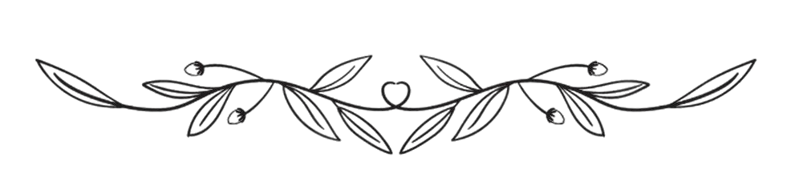

Undangan
Pernikahan
Kepada:
وَمِنْ اٰيٰتِهٖۤ اَنْ خَلَقَ لَكُمْ مِّنْ اَنْفُسِكُمْ اَزْوَا جًا لِّتَسْكُنُوْۤا اِلَيْهَا وَجَعَلَ بَيْنَكُمْ مَّوَدَّةً وَّرَحْمَةً ۗ اِنَّ فِيْ ذٰلِكَ لَاٰ يٰتٍ لِّقَوْمٍ يَّتَفَكَّرُوْنَ
Dan di antara tanda-tanda (kebesaran)-Nya ialah Dia menciptakan pasangan-pasangan untukmu dari jenismu sendiri, agar kamu cenderung dan merasa tenteram kepadanya, dan Dia menjadikan di antaramu rasa kasih dan sayang. Sungguh, pada yang demikian itu benar-benar terdapat tanda-tanda (kebesaran Allah) bagi kaum yang berpikir."
(QS. Ar-Rum 30: Ayat 21)
